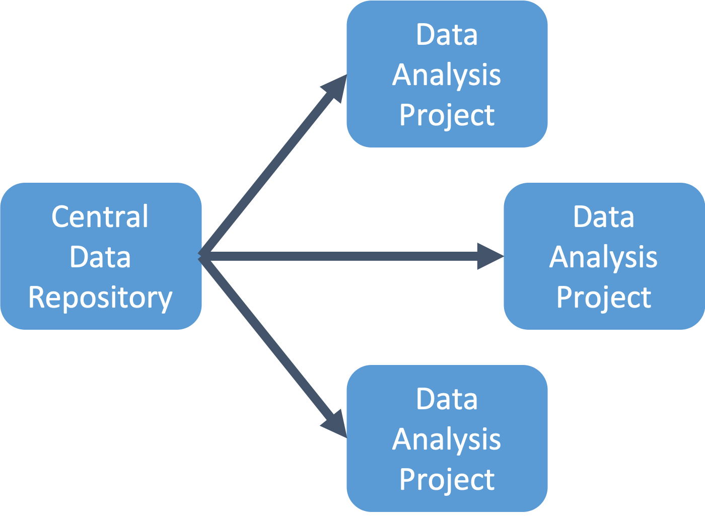
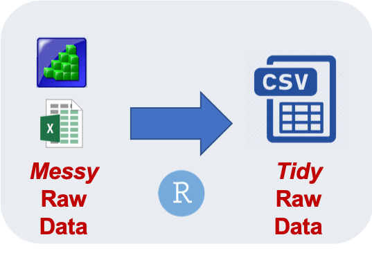
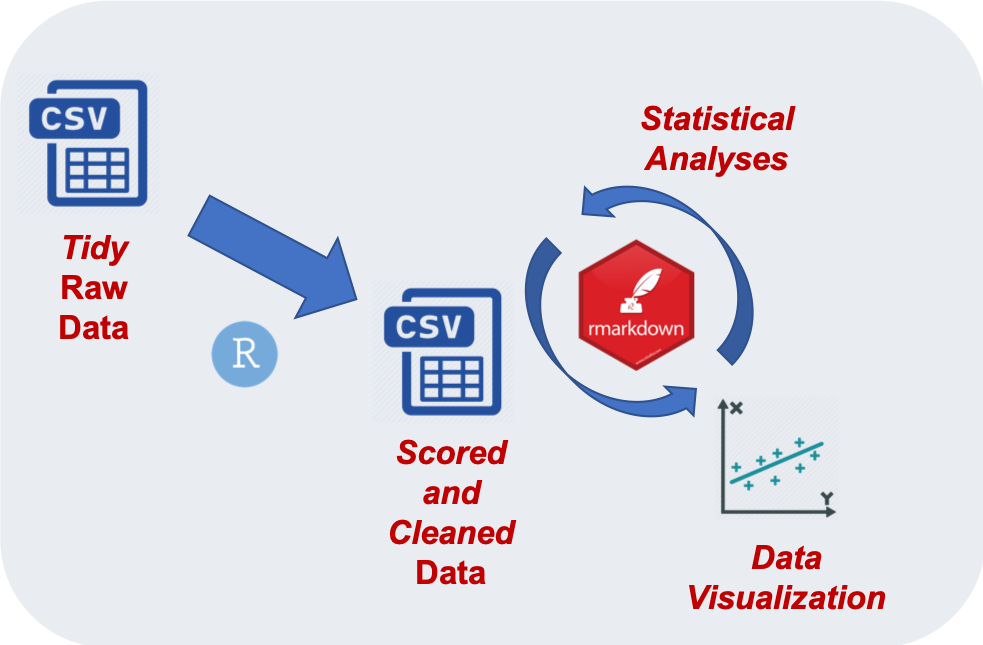
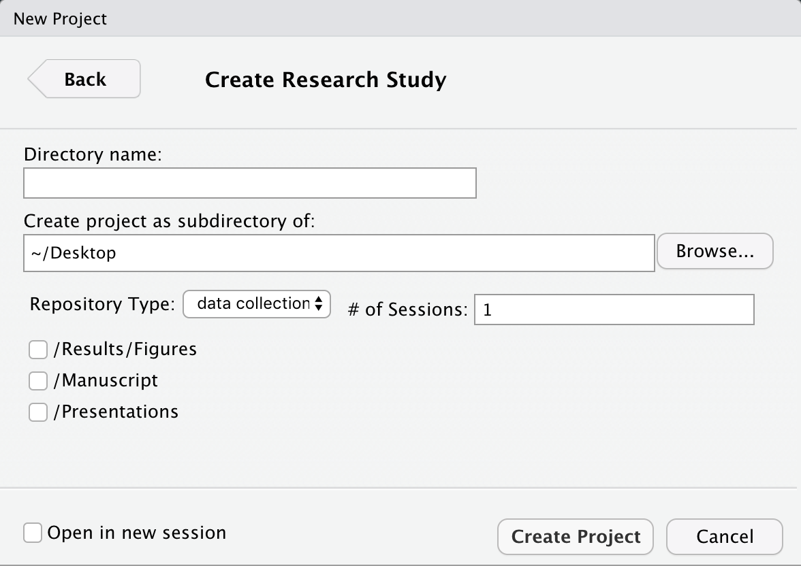
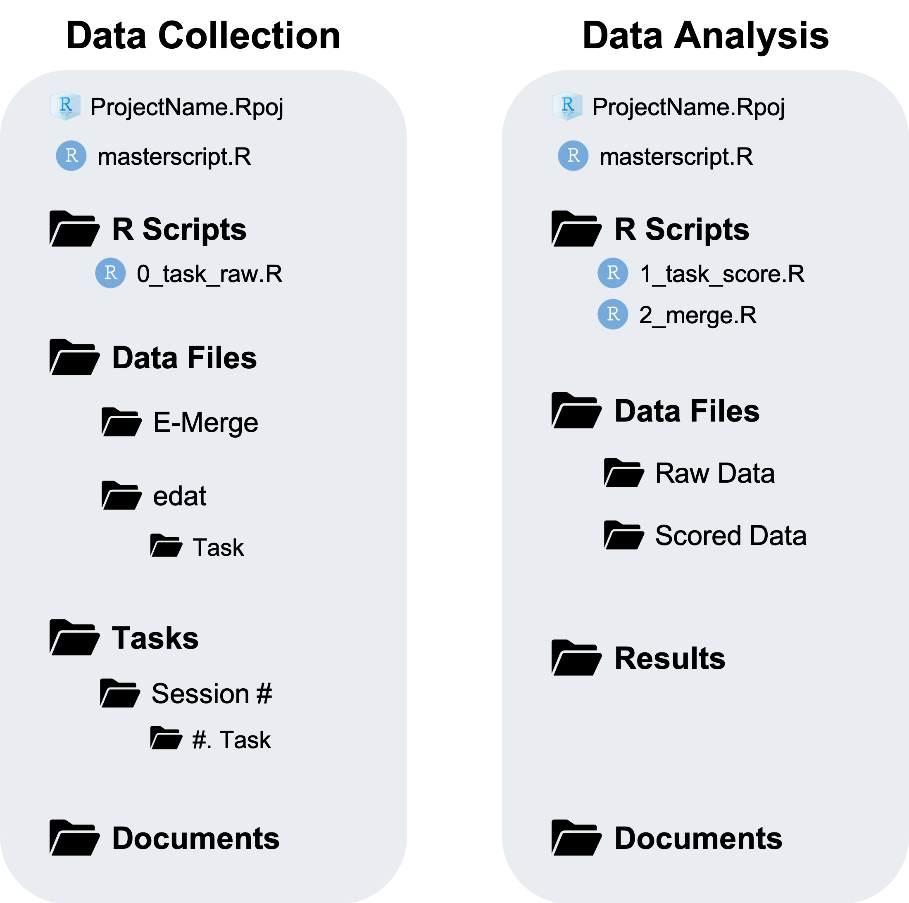

Chapter 7 Project Organization
In the EngleLab, we often conduct large-scale data collection studies in which there are many different research projects going on at once. Many of the tasks will be shared between these research projects. This means each separate project is using a lot of the same data. This can make it difficult to figure out how and at what stage to separate data processing and analysis between these studies.
I will suggest a particular organizational method to deal with this issue. This method will also make it easier in the future to go back and work with unanalyzed or archival data.
The basic idea is that you have a central repository for a study. That central repository will store:
Raw data files
R Scripts
- To convert messy raw data files to tidy raw data files
- To convert messy raw data files to tidy raw data files
The programmed tasks administered to subjects
Any documents related to the study
- Methods document, Consent form, demographic forms, etc.
Essentially the initial repository used for data collection will become the central repository.
From this central repository you can then create separate repositories for different data analysis projects. To do so, and this is the key part, you only need to copy and paste the tidy raw data files. The tidy raw data files are created during the data preparation stage.

An advantage to this is that for each data analysis project, you will be able to FULLY reproduce your data processing and analyses independently of other data analysis projects.
A key part of this is that you copy ONLY the tidy raw data files from the central repository to a data analysis project. You do not copy data files from one data analysis project to another!
You CAN copy R Scripts from one data analysis project to another. For instance, if you or someone else already created an R Script (for another data analysis project) to score a particular task that you are also using, then there is no problem in copying the R Script.
In general, you will probably copy R scripts from one project to another. The important point is that you are not copying data files from one project to another!
This is because you can reproduce the data files from your R Scripts and not vice versa. If you copy data files you lose reproducibility and the transparency of how the data file was created.
7.1 Data Collection
Unfortunately, you have to actually collect data before you can start analyzing anything. Therefore, you start out with a single repository: Data Collection. It may be organized something like this
The Tasks folder is where the E-Prime task files are that will be used to administer each task to the subjects. This folder is synced (through Dropbox) to the running room computers.
In our lab we typically have multiple Sessions and multiple Tasks in each session. As you begin data collection, .edat data files will start to accumulate in each Task folder.
Documents is where you may store various documents related to the study, such as a Methods.docx document describing each task in detail. This is an important document for archival purposes. Some of your other documents in this directory may not be as important for archival purposes, such as an informed consent form.
7.2 Data Preparation
At some point you will need to start analyzing the data. However, you first need to prepare the data so that it is ready to analyze. There are several steps in this processs and it can be quite tedious. Nevertheless, undergraduate RAs are trained on how to do most of these steps, so recruit their help. There are also step-by-step instructions for Data Preparation.

Once you are ready for Data Collection you will need to create a Data Files and R Scripts folders.
There are two scenarios in which you may need to start processing and analyzing data:
Before data collection has finished
After data collection has finished
For both of these scenarios, there are 4 data preparation steps:
Organize the raw data files. This involves moving the raw .edat files from Tasks/Session #/#. Task/data to Data Files/subj/Task/.
Merge the individual .edat files into a single task.emrg file using E-Merge
Export the task.emrg file to a task.txt file so we can process the data in R
Source the 0_task_raw.R Scripts
0_task_raw.R imports a task.txt file and creates a tidy raw data file, task_raw.csv
See Data Preparation Instructions for a detailed guide on how to perform each of these steps. I have automated step 1 using a simple line of R code (so you will definitely want to check that out).
After performing the 4 data preparation steps you will have tidy raw data files for each task saved as task_raw.csv in the Data Files folder. It is these files that you can then copy over to a Data Analysis repository.
The Data Collection repository will serve as the Central Repository that you use to create separate Data Analysis repositories from.
7.3 Data Analysis
Okay, now say you are ready to analyze some data! It is tempting to do your analysis in the original Data Collection repository where the data are already stored. I highly suggest not doing this. You will be mixing up a Central Repository with a Data Analysis repository. This is particularly important when we conduct large-scale studies with many data analysis projects for a single data collection.
Instead, you should copy over the task_raw.csv data files to a separate Data Analysis repository.
You also might as well create an Archival Backup of the Central Repository on some other hard drive. That way you are at less risk of a hard drive crashing and losing all your precious data.
In the Data Analysis repository you have three main directories:
Data Files
R Scripts
Results
Your final repository will look something like:

You start with only the task_raw.csv files located in Data Files/Raw Data, copied over from the Central Repository.
The 1_task_score.R scripts imports a task_raw.csv file and performs data cleaning and scoring to create a task_Scores.csv file located in Data Files/Scored Data.
The 2_merge.R script merges all the task_Scores.csv files together into one Final_Data.csv located in Data Files. This file is ready for statistical analysis, it will have all the variables you are interested in and univariate outliers removed.
The 3_Analysis.Rmd is an R Markdown script document for conducting statistical analyses and data visualization on Final_Data.csv. The output of this script document is Main_Analysis.html located in Results
Notice how this organization corresponds to the procedure in the workflow diagram below

You may have other directories in your Data Analysis repository:
Figures
Manuscript
Presentations
Figures is where any image files, that are used in a manuscripta or presentations, are stored. You may also have a PowerPoint file stored here.
Manuscript is where the manuscript and any drafts for this project are stored.
Presentations is where any PowerPoint presentation files related to this project can be stored.
These other directories are more optional.
7.4 workflow package
I will show you how to automatically create Data Collection and Data Analysis repositories using RStudio Projects and my workflow package
The most important thing to remember is that the Data Collection repository will serve as the Central Repository and that you need to copy and paste the tidy task_raw.csv data files to a Data Analysis repository. But never copy and paste data files from one Data Analysis repository to another.
When should you create a separate Data Analysis repository? Basically, if the set of analyses is going to be it’s own Manuscript then create a new repository. If the set of analyses (whether exploratory or supplemental) is part of a larger set of analyses already in the works for a manuscript then no need to create a separate repository.
7.4.1 Install
Install the workflow package
devtools::install_github("dr-JT/workflow")7.4.2 Create a New R Project
One of the features this package allows is for you to automatically setup the organization of a Data Collection or Data Analysis project.
Navigate to __File -> New Project… -> New Directory
And browse until you see the option: Research Study
Click on that and you will see a dialogue box like this

Here are what the different options mean:
Directory Name: This will be the name of the folder for the study
Create project as subdirecotry of: Select Browse and choose where the folder (Directory Name) should be located.
Repository Type: data collection or data analysis. Depending on which one you choose it will create the corresponding directories and files:

Notice that if you choose the data collection repository it will download a generic template for converting “messy” raw data files to “tidy” raw data files. And if you choose the data analysis repository it will download generic templates for creating scored data files from “tidy” raw data files and to merge the Scored data files into one final data file.
# of Sessions: How many sessions will the study have? This will create folders in the
Tasksdirectory for each session. For instance, if there will be 4 sessions it will create the the folders “Session 1”, “Session 2”, “Session 3”, and “Session 4”. Obviously this is not needed for a data analysis repository.Other Directories: I talked earlier about some other directories you may want to include in a Data Analysis repository. Well you can automatically add them here.
Go ahead and play around with creating different types of repositories.
Now on to reproducible practices